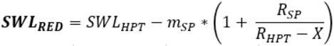
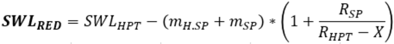
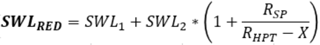

Reduzierte Traglast am Hauptausleger-Kopf berechnen
Wenn der Lastort am Hauptausleger-Kopf ist und zusätzlich ein Spitzenausleger angebaut ist, muss die Traglast berechnet werden. Für diese Auslegerkonfigurationen existiert keine Traglasttabelle. Das statische Moment des Spitzenauslegers reduziert die gültigen Traglasten des Hauptauslegers.
Der Spitzenausleger verfälscht die Lastanzeige auf der Bildschirmseite Betrieb. Die Lastmomentbegrenzung schaltet beim maximal zulässigen Lastmoment ab.
Last am Hauptausleger-Kopf bei angebautem Spitzenausleger
Zur überschlagsmäßigen Berechnung der reduzierten Traglast:
SWLRED = SWLHPT - 1000 kg (2,205 lb)
Zur exakten Berechnung der reduzierten Traglast:

Fig. 3750: Exakte Berechnung der reduzierten Traglast
Fig. 3750: Exakte Berechnung der reduzierten Traglast
Last am Hauptausleger-Kopf und Lastaufnahmemittel am angebauten Spitzenausleger
Zur überschlagsmäßigen Berechnung der reduzierten Traglast:
SWLRED = SWLHPT - 1000 kg (2,205 lb) - 1,5 * mH.SP
Zur exakten Berechnung der reduzierten Traglast:

Fig. 3752: Exakte Berechnung der reduzierten Traglast
Fig. 3752: Exakte Berechnung der reduzierten Traglast
Last am Hauptausleger-Kopf und Last am Spitzenausleger
Zur überschlagsmäßigen Berechnung der reduzierten Traglast:
Voraussetzung: SWL2 ≤ SWLSP und SWL1 ≤ SWLHPT
SWLRED = SWLHPT - 1,5 * mSP = SWL1 + 1,5 * SWL2
Zur exakten Berechnung der reduzierten Traglast:
Voraussetzung: SWL2 ≤ SWLSP und SWL1 ≤ SWLHPT

Fig. 3755: Exakte Berechnung der reduzierten Traglast
Fig. 3755: Exakte Berechnung der reduzierten Traglast
SWLRED = Reduzierte Traglast für Hub mit Spitzenausleger am Hauptausleger-Kopf | |
SWLHPT = Maximale Traglast für Hauptausleger-Kopf bei RHPT laut gültiger Traglasttabelle | |
SWLSP = Maximale Traglast für Spitzenausleger bei RSP laut gültiger Traglasttabelle | |
RHPT = Ausladung der Last am Hauptausleger-Kopf | |
X = Abstand zwischen Drehachse und Hauptausleger-Anlenkpunkt | |
mSP = Gewicht des Spitzenauslegers | |
mH.SP = Gewicht des Lastaufnahmemittels am Spitzenausleger | |
RSP = Ausladungsvergrößerung durch Spitzenausleger |
Reduzierte Traglast vor jedem Hub berechnen. |
Reduktion der gültigen Traglasten durch angebauten Spitzenausleger beachten. |